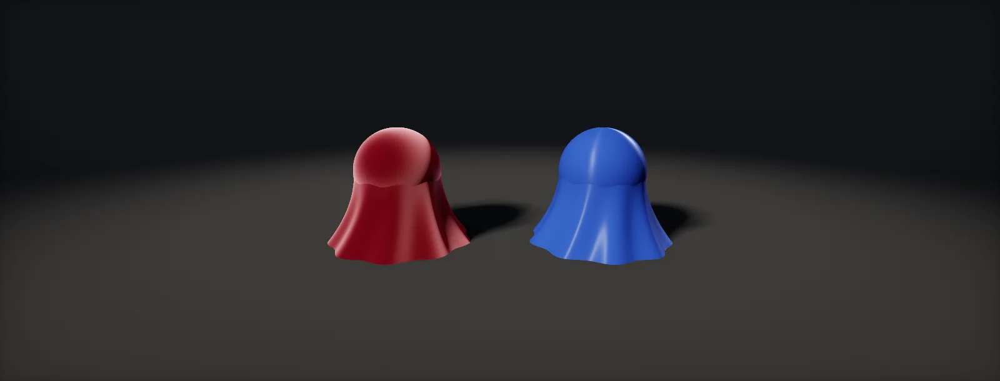

Cloth Shading
Velvet glows at its edges, satin streaks, cotton is soft. This unit explains why fabric needs its own shading terms and builds them: sheen, a cloth visibility term, wrapped diffuse, anisotropic silk, fuzz and weave.

Why fabric needs its own model
The standard PBR model describes a solid surface covered in tiny mirror facets. Fabric is not solid: it is a tangle of fibres, many of them sticking out of the surface. Those loose fibres catch light at grazing angles, so the outline of a velvet cushion glows () while the part facing you stays soft and dark. GGX does the opposite: its highlight sits where the surface faces the light and viewer. That is why cloth rendered with the standard model looks like plastic.
Fabrics fall into two groups. Fuzzy fabrics (cotton, wool, velvet, felt) have fibres pointing every way and need a sheen term. Smooth, woven fabrics (silk, satin, nylon) have long parallel threads and need an anisotropic highlight.
The sheen distribution
The usual sheen term is the "Charlie" distribution from Sony Imageworks. Where GGX puts most facets near the normal, Charlie puts them near 90° from it, like fibres standing out of the surface. Compare the two, and see what it does to a ball of velvet lit from the front:
The light comes from almost the same direction as the view, yet the brightest part is the rim. Roughness here controls how far the fibres lean: low values concentrate the sheen in a thin rim, high values spread it.
The cloth visibility term
The geometry term of GGX assumes facets on a surface shadowing each other. For fibres a much simpler term works (Neubelt and Pettineo's, used in Filament and many engines). It replaces both G and the 4 · N·L · N·V denominator, and it stays finite at grazing angles, where the sheen lives:
The full cloth specular is D · V · sheenColor. There is no Fresnel term: fibres scatter at every angle, so the sheen colour itself sets the strength. It is usually a lighter, less saturated version of the base colour, or white for satin-like shine.
Soft diffuse and subsurface colour
Light also passes between and through fibres, so the shadow side of fabric is soft and slightly coloured, like wrap lighting on skin. Filament's cloth model wraps the diffuse and multiplies it by saturate(subsurface + N·L): where the light hits directly that factor is 1, and as the light wraps around it fades to the subsurface colour:
Silk and satin: anisotropic highlights
In satin and silk, long threads run in one direction. Facets are spread differently along the threads than across them, so the highlight stretches into a streak across the thread direction, like on hair. Anisotropic GGX has two roughness values, one along the tangent T (the threads) and one along the bitangent B (across them). The threads are smooth along their length and curved across it, so αB is the larger one:
The thread direction comes from the mesh tangents (tangent space) or from a flow map, exactly as for hair. Rotating it per panel of a garment, following the real cut of the fabric, is what makes a satin dress read as sewn rather than painted.
Fuzz and weave
Two cheap layers complete a fabric. A fuzz rim adds a soft halo at the silhouette for felt, wool and peach-skin fabrics, independent of the light:
The weave is a tiling detail normal map (and sometimes an alpha or AO map) at the real thread scale, blended over the folds (blending normals). Threads are tiny, so the weave must fade out before it becomes finer than a pixel, or it shimmers:
The Fabric Shader Graph target has two material types: Cotton Wool (Charlie sheen with the cloth visibility term, a sheen colour and a subsurface mask) and Silk (anisotropic GGX with an anisotropy value and tangent map).
URP has no fabric model. Build the sheen term and wrapped diffuse with a Custom Function node and the main light from the lighting functions, or approximate velvet with a fresnel-driven rim in an Unlit or Lit graph.
The Cloth shading model adds Fuzz Color and a Cloth blend amount to the default lit inputs (an Ashikhmin-style sheen). Anisotropy is available through the Anisotropy and Tangent inputs, and Substrate adds a dedicated fuzz layer.
Build it in Unity HDRP
HDRP's Fabric graph has both models of this unit: Cotton Wool uses the Charlie sheen with the cloth visibility term, Silk uses anisotropic GGX. The HLSL file implements the same terms for URP or custom lighting. Written for Unity 6 with HDRP 17; Unity 2022 LTS works the same apart from a few renamed menu entries.
- Create > Shader Graph > HDRP > Fabric Shader Graph. Material Type
Cotton Woolfor velvet, cotton, felt and wool;Silkfor satin, silk and nylon. - Cotton Wool inputs: Base Color, Specular Color (the sheen colour: a lighter, less saturated version of the base, from the visibility chapter), Smoothness (low values spread the sheen), Normal.
- Silk adds Tangent (the thread direction in tangent space, from the mesh or a flow map) and Anisotropy (−1 to 1, which way and how much the highlight stretches).
- Soft, coloured shadow side: enable Subsurface Scattering (a Diffusion Profile tinted like the fabric) or Transmission with a thickness for thin fabric such as curtains.
- Weave: sample a tiling weave normal at the real thread scale (UV × tiling), blend it over the fold normal with Normal Blend (Reoriented), and fade it out with distance: lerp the weave strength by
1 − smoothstep(near, far, distance), with distance from the Camera node's position (fuzz and weave). - Fuzz: a Fresnel Effect node (power 3–5) × a fuzz colour, added to the base colour, lifts the silhouette of felt and peach-skin fabrics.
- Custom or URP: save
Cloth.hlsl. In an Unlit graph, add a Custom Function node. Set Type toFile, Source toCloth.hlsland Name toClothSheen(without the_floatsuffix). Add the inputs Normal (Vector 3), ViewDir (Vector 3), LightDir (Vector 3), BaseColor (Vector 3), SheenColor (Vector 3), Roughness (Float), SubsurfaceColor (Vector 3) and the outputs Color (Vector 3), in that order and with those types: they must match the function's parameters.SilkAnisoin the same file is the satin version.
#ifndef ATLAS_CLOTH_INCLUDED
#define ATLAS_CLOTH_INCLUDED
float CharlieD(float NoH, float roughness) // sheen distribution (Estevez and Kulla)
{
float a = max(roughness * roughness, 0.01);
float inv = 1.0 / a;
float sin2 = max(1.0 - NoH * NoH, 0.0);
return (2.0 + inv) * pow(sin2, inv * 0.5) / (2.0 * PI);
}
float ClothV(float NoL, float NoV) // visibility (Neubelt and Pettineo)
{
return 1.0 / (4.0 * (NoL + NoV - NoL * NoV) + 1e-4);
}
// Velvet, cotton, wool: wrapped diffuse tinted by a subsurface colour, plus sheen. Light colour = 1.
void ClothSheen_float(float3 Normal, float3 ViewDir, float3 LightDir, float3 BaseColor, float3 SheenColor,
float Roughness, float3 SubsurfaceColor, out float3 Color)
{
float3 N = normalize(Normal), V = normalize(ViewDir), L = normalize(LightDir), H = normalize(L + V);
float NoL = dot(N, L), NoV = saturate(dot(N, V)) + 1e-4, NoH = saturate(dot(N, H));
float wrap = saturate((NoL + 0.5) / 2.25); // w = 0.5
float3 diffuse = BaseColor / PI * wrap * saturate(SubsurfaceColor + NoL);
float3 sheen = SheenColor * CharlieD(NoH, Roughness) * ClothV(saturate(NoL), NoV) * saturate(NoL);
Color = diffuse + sheen;
}
// Satin and silk: anisotropic GGX. T along the threads; AlphaT small (smooth along), AlphaB larger (across).
void SilkAniso_float(float3 Normal, float3 Tangent, float3 ViewDir, float3 LightDir, float3 BaseColor,
float AlphaT, float AlphaB, out float3 Color)
{
float3 N = normalize(Normal);
float3 T = normalize(Tangent - N * dot(Tangent, N)); // keep T on the surface
float3 B = cross(N, T);
float3 V = normalize(ViewDir), L = normalize(LightDir), H = normalize(L + V);
float NoL = saturate(dot(N, L)), NoV = saturate(dot(N, V)) + 1e-4;
float th = dot(T, H) / AlphaT, bh = dot(B, H) / AlphaB, nh = dot(N, H);
float d = th * th + bh * bh + nh * nh;
float D = 1.0 / (PI * AlphaT * AlphaB * d * d);
float F = 0.04 + 0.96 * pow(1.0 - saturate(dot(V, H)), 5.0);
Color = BaseColor / PI * NoL + D * F * NoL / (4.0 * NoL * NoV + 0.15);
}
#endifLight the custom versions with _SunDirection and _SunColor from SunToShader.cs and multiply the result by the light colour. In HDRP, prefer the Fabric graph: it also handles shadows, all light types and the environment.
No fabric model: use ClothSheen and SilkAniso with GetMainLight() in a Custom Function, plus a Fresnel rim for fuzz. For many lights, loop over GetAdditionalLight.
Shading Model: Cloth with Fuzz Color and Cloth (blend amount); anisotropy through the Anisotropy and Tangent pins (enable Support Anisotropic Materials in the project). Substrate offers a dedicated fuzz layer on a slab.
Sources and further reading
The formulas and engine details in this unit come from these references. Engine documentation changes between versions.
- DocsFilament: Cloth modelGoogleCharlie sheen, the Neubelt visibility term and wrapped subsurface diffuse (section 4.12).
- CoursePhysically Based Shading in Theory and Practice 2017 (Production Friendly Microfacet Sheen BRDF)Alejandro Conty Estevez, Christopher Kulla · SIGGRAPH 2017Where the Charlie distribution comes from.
- CoursePhysically Based Shading in Theory and Practice 2013 (Crafting a Next-Gen Material Pipeline for The Order: 1886)David Neubelt, Matt Pettineo · SIGGRAPH 2013The cloth visibility term and a production fabric pipeline.